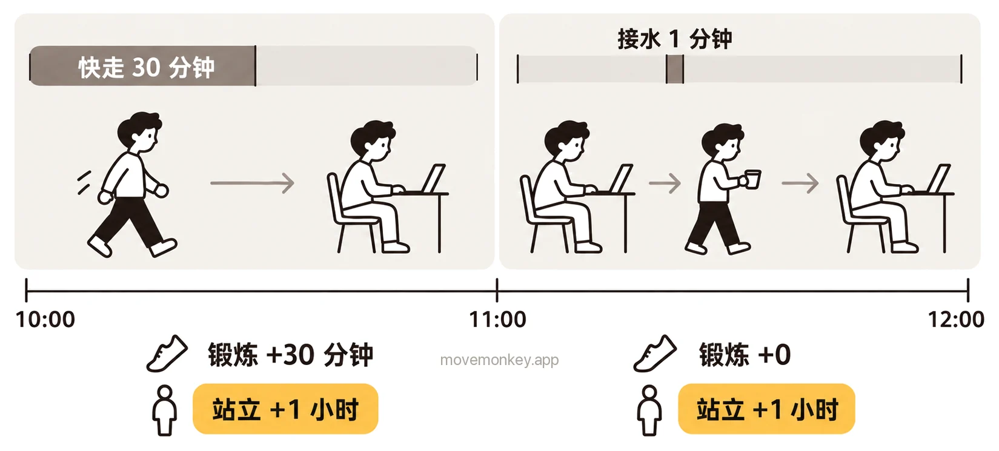

Apple Watch 的站立是怎么算的？
Apple Watch 站立怎么算？
Apple Watch 按整点一小时一小时地算站立：一小时里站起来并活动至少 1 分钟，这一小时就算站过，记为 1 个站立小时。
Apple 的说明：“蓝色的“站立”圆环显示你一天内每小时至少站立和活动 1 分钟的次数。”[1]
“健康” App 里还有一项“站立分钟数”，记的是每小时里你站立和活动了几分钟。Apple 的说明：“每小时赢得至少一个站立分钟数也可让你赢得站立圆环中的小时数。”[2]所以，一小时里站起来活动了 1 分钟和 40 分钟，在“站立”圆环上都只算 1 个小时，差别只体现在站立分钟数里。
站立小时只说明这一小时里有没有站过，不说明你连续坐了多久：比如 9:00 起身倒杯水，9 点这一格就算站过；之后一直坐到 10:50，已经连续坐了 1 小时 49 分钟，“站立”圆环上却看不出来，见 Apple Watch 站立提醒是怎么算时间的？如果想在连续坐久了时被提醒，可以考虑久坐提醒 App MoveMonkey，它从你上次起身开始计时。

Apple Watch 怎么判断你站起来了？站着不动算吗？
只站着不动，不一定算：Apple 要求的是站起来并活动，不只是站着。
Apple 介绍健身圆环时说：“站起来，更要动起来。当你站起身时，可以在周围稍微动一动，比如喝点水、伸伸懒腰、找同事聊聊天。”[3]
2024 年，英国邓迪大学的研究者分析了 20 名 Apple Watch 用户在 2022 年 8 月的数据，共约 9,200 个小时，看一小时有没有记为站立小时，和哪些数据有关。研究发现，关系最大的是步数和活动能量：一小时里超过 97.5 步，或活动能量超过 100 千焦（约 24 千卡），这一小时被记为站立小时的可能性就明显变大。作者也认为，是否记为站立小时，可能不只取决于一个因素。[4]
Apple Watch 站立和锻炼有什么区别？
“站立”圆环记的是一天里有几个小时站起来活动过，“锻炼”圆环记的是有多少分钟的活动达到了快走以上的强度。
Apple Watch 的三个健身圆环分别记什么
| 圆环 | 记什么 | Apple 的说明 |
|---|---|---|
| 活动（红色） | 活动时燃烧的卡路里 | “红色的“活动”圆环显示你活动时燃烧的卡路里。”[1] |
| 锻炼（绿色） | 强度不低于快走的分钟数 | “进行至少 30 分钟强度不低于快走的运动，就能填满锻炼圆环。”[3] |
| 站立（蓝色） | 站起来活动过的小时数 | “蓝色的“站立”圆环显示你一天内每小时至少站立和活动 1 分钟的次数。”[1] |
比如 10:00 到 10:30 快走 30 分钟，“锻炼”圆环加 30 分钟，“站立”圆环只加 1 个小时，因为这 30 分钟都在 10 点这一个小时里。

Apple Watch 站立 12 小时、“4/12”是什么意思？目标怎么改？
“4/12”表示今天已有 4 个站立小时，站立目标是 12 小时。
Apple 介绍健身圆环时的说明是：“在一天中的 12 个小时里，每小时都至少起身活动 1 分钟，就能填满站立圆环。”[3]
站立目标可以设为 6 到 16 小时。[5]watchOS 7 起能更改[6]，watchOS 11 起还能按星期几分别设定[7]。
- 在 Apple Watch 上打开“健身记录” App。
- 旋转数码表冠到“站立”圆环，然后轻点“更改目标”按钮。
- 轻点“更改今日目标”或“更改每日目标”，用减号或加号调整，然后轻点“设定”。
想按星期几分别设定：轻点“更改每日目标”后，再轻点右上角的“目标类型”按钮，然后轻点“定时”，调整后轻点“设置定时”。[5]
Apple Watch 站立为什么记不准？
站了却没记上，可能是 Apple Watch 没戴好；不少用户还反映，手臂一直没怎么动时，站着也可能不算。
- Apple Watch 戴得太松或太紧，或者和手腕之间隔着衬衫袖子，可能检测不到它戴在手腕上。[8]如果关闭了“手腕检测”，Apple 的说明是：“部分健身测量将不可用。”[8]
- 只带 iPhone、没戴 Apple Watch，不会记站立。“站立”圆环只在有 Apple Watch 时显示[9]，站立分钟数也由 Apple Watch 记录[2]。
- 不少用户反映，Apple Watch 判断站立主要看手臂的摆动。推购物车、站着做饭、在站立办公桌前工作时，手臂不怎么摆动，站着也可能不算；坐着织毛衣时手臂一直在动，反而可能被算作站立。[10]

久坐提醒 App · 即将在 App Store 推出
MoveMonkey：从上次起身开始算的久坐提醒
从你上次起身开始，坐满你设定的时间（30、45、60 或 90 分钟），小猴子才会提醒你。适用于 iPhone 和 Apple Watch，只用 iPhone 也可以；走动或站立后自动重新计时。
早上等你起身后才开始计时，午休可以设为不提醒，提醒时段也由你设定。
轻点“起身动动”，只要走上 1 分钟，小猴子还会为你喝彩。
核心功能永久免费，没有广告。
看更详细的介绍 →